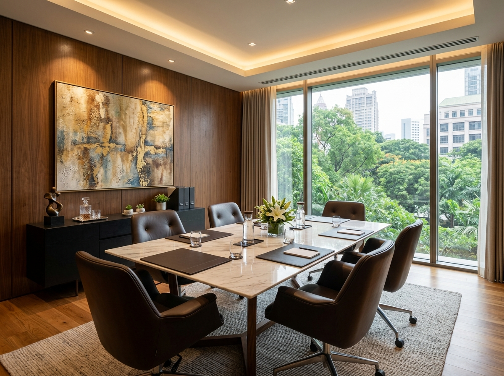

Escritório de Advocacia em Serafina Corrêa – RS
O Almeida & Ribeiro Advocacia oferece orientação jurídica em diferentes áreas do Direito, com atendimento voltado às necessidades de cada pessoa. Entenda suas possibilidades legais com comunicação clara, análise individualizada e respeito às particularidades do seu caso em Serafina Corrêa e região.
“Cada situação jurídica merece atenção, clareza e uma análise cuidadosa.”
Pilares e Credibilidade
Atendimento individualizado
Atenção às particularidades de cada situação.
Comunicação transparente
Informações claras sobre procedimentos e etapas.
Honorários esclarecidos
Explicação prévia dos honorários e possíveis despesas.
Diferentes áreas do Direito
Orientação conforme a natureza de cada demanda.
Advocacia em Serafina Corrêa com atenção a cada caso

O Almeida & Ribeiro Advocacia é um escritório voltado à orientação jurídica em diferentes áreas do Direito, com o compromisso de compreender as necessidades de cada pessoa e apresentar informações claras sobre as possibilidades legais disponíveis.
Cada situação possui suas particularidades. Por isso, o atendimento começa pela escuta, pela análise das informações apresentadas e pela identificação dos aspectos jurídicos relevantes para o caso.
Com atendimento em Serafina Corrêa e região, o escritório busca tornar a comunicação entre advogado e cliente mais clara, respeitosa e transparente, inclusive quanto às etapas do trabalho, aos honorários e aos possíveis riscos envolvidos.
Como podemos ajudar você
Conheça as áreas jurídicas atendidas pelo Almeida & Ribeiro Advocacia. A orientação adequada depende das circunstâncias de cada caso e da análise dos documentos e das informações disponíveis.
DIREITO CIVIL
Questões civis podem envolver contratos, obrigações, responsabilidade civil e pedidos de indenização. A análise jurídica permite compreender os direitos envolvidos, as alternativas possíveis e as medidas que podem ser consideradas em cada situação.
DIREITO DE FAMÍLIA
Questões familiares exigem atenção às circunstâncias pessoais e aos direitos de todos os envolvidos. O atendimento abrange situações relacionadas a divórcio, pensão alimentícia, guarda e regulamentação de convivência.
DIREITO TRABALHISTA
Dúvidas sobre relações de trabalho podem envolver verbas rescisórias, horas extras e outros direitos trabalhistas. A análise das condições de trabalho, dos documentos e das circunstâncias do vínculo ajuda a esclarecer quais questões merecem avaliação jurídica.
DIREITO PREVIDENCIÁRIO
Questões previdenciárias podem envolver aposentadorias, benefícios e pedidos negados pelo INSS. A avaliação do histórico contributivo, dos documentos e dos motivos de eventual indeferimento ajuda a identificar as alternativas aplicáveis ao caso.
DIREITO DO CONSUMIDOR
Problemas com contratos, cobranças indevidas e possíveis danos nas relações de consumo podem exigir análise jurídica. Cada situação deve ser avaliada considerando os documentos, as circunstâncias e as normas aplicáveis.
DIREITO CRIMINAL
Questões criminais exigem atenção aos direitos e às garantias legais das pessoas envolvidas. A atuação jurídica pode abranger orientação e defesa, conforme a natureza do caso e a fase do procedimento.
Não sabe qual área do Direito corresponde à sua situação? Entre em contato para explicar sua dúvida e verificar a possibilidade de atendimento.
Conversar pelo WhatsAppPor que buscar orientação no Almeida & Ribeiro Advocacia?
Atenção individualizada
Cada situação é analisada considerando suas circunstâncias, necessidades e particularidades, sem presumir que todos os casos podem ser tratados da mesma forma.
Comunicação clara
As informações sobre o trabalho jurídico são apresentadas de maneira compreensível, facilitando o entendimento das etapas e das questões relevantes.
Transparência sobre honorários
Os honorários, as possíveis despesas e as condições de contratação são esclarecidos previamente, conforme o serviço a ser realizado.
Análise cuidadosa da situação
A avaliação dos fatos e dos documentos ajuda a identificar as questões jurídicas envolvidas e as alternativas que podem ser consideradas.
Respeito e discrição
Questões jurídicas podem envolver informações pessoais delicadas. O atendimento deve ser conduzido com respeito e observância dos deveres de sigilo profissional aplicáveis.
Orientação sobre os próximos passos
O cliente recebe esclarecimentos sobre os procedimentos pertinentes, as informações necessárias e os possíveis riscos jurídicos, de acordo com as particularidades do caso.
Como funciona o atendimento jurídico
Primeiro contato
Entre em contato pelo WhatsApp e apresente brevemente sua dúvida ou situação. Esse primeiro contato permite verificar a natureza da demanda e a possibilidade de atendimento.
Compreensão do caso
As informações relevantes são levantadas para compreender os fatos, as necessidades envolvidas e as principais questões jurídicas.
Análise das informações
Conforme a demanda, poderão ser solicitados documentos e informações complementares para avaliar as circunstâncias e as alternativas aplicáveis.
Esclarecimento das possibilidades
São explicados os caminhos jurídicos que podem ser considerados, as etapas pertinentes e os riscos envolvidos, sem garantia de resultados.
Definição dos próximos passos
Caso o atendimento seja adequado e haja concordância com as condições apresentadas, são esclarecidos os honorários, as possíveis despesas e os procedimentos para formalizar a contratação.
Escritório de Advocacia em Serafina Corrêa e região
O Almeida & Ribeiro Advocacia está localizado em Serafina Corrêa, no Rio Grande do Sul, e informa atendimento para demandas de pessoas de Guaporé e Casca. A possibilidade e a forma de atendimento devem ser confirmadas conforme a natureza de cada situação.
A atuação contempla questões de Direito Civil, Direito de Família, Direito Trabalhista, Direito Previdenciário, Direito do Consumidor e Direito Criminal. O primeiro contato permite esclarecer a necessidade jurídica e verificar a disponibilidade para atendimento.
Endereço
Rua Orestes Assoni, 230, 2º andar, sala 203, Centro, Serafina Corrêa/RS, CEP 99250-000
Horário de Atendimento
Segunda a sexta-feira, das 9h às 12h e das 13h30 às 18h
Perguntas frequentes sobre serviços jurídicos em Serafina Corrêa
Precisa de orientação jurídica?
Entender sua situação é um primeiro passo para avaliar as alternativas disponíveis. Entre em contato para apresentar sua dúvida e verificar a possibilidade de atendimento pelo Almeida & Ribeiro Advocacia.
O atendimento, os honorários e os próximos passos serão esclarecidos conforme a natureza da demanda.
Rua Orestes Assoni, 230, 2º andar, sala 203, Centro, Serafina Corrêa/RS, CEP 99250-000.
Segunda a sexta-feira, das 9h às 12h e das 13h30 às 18h.